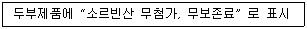

식품산업기사 (2012-08-26 기출문제)
1과목: 식품위생학
1. 먹는 물의 수질기준 중 미생물에 관한 기준으로 잘못된 것은?
- 일반세균은 1mL 중 100CFU를 넘지 아니할 것
- 총 대장균은 100mL에서 검출되지 아니할 것
- 살모넬라, 쉬겔라는 완전 음성일 것
- 여시니아균은 2L에서 검출되지 아니할 것
(정답률: 71%)

2. 식품 보관시 진드기류의 방제법으로 적절하지 않은 것은?
- 포장에 의한 방법
- 습도를 줄이는 방법
- 냉장하는 방법
- 상온에서 보관하는 방법
(정답률: 87%)
3. 식품의 기준규격 시험항목과 시험법이 잘못 연결된 것은?
- 김치 중 Tar색소 - 모사염색법
- 고춧가루 중 곰팡이 수 - PDA배지법
- 라면 중 이물 - 와일드만 라스크법
- 식염 중 비소 - 굿짜이트법
(정답률: 47%)
4. 식품 등의 표시기준에 의거하여 볼 때 아래의 표시가 잘못된 이유는?

- 식품 등의 표시사항에 해당하지 않는 식품첨가물의 표시
- 원래의 식품에 해당 식품첨가물의 함량이 전혀 들어있지 않는 경우 그 영양소에 대한 강조표시
- 해당 식품에 사용하지 못하도록 한 식품첨가물에 대하여 사용을 하지 않았다는 표시
- 건강기능식품과 혼동하여 소비자가 오인할 수 있는 표시
(정답률: 78%)
5. 식품에 사용되는 보존료의 조건으로 부적합한 것은?
- 인체에 유해한 영향을 미치지 않을 것
- 적은 양으로 효과적일 것
- 식품의 종류에 따라 작용이 가변적일 것
- 내열성이 있을 것
(정답률: 82%)
6. 소고기 육회를 먹을 때 감염될 수 있는 기생충은?
- 유구조충
- 십이지장충
- 요충
- 무구조충
(정답률: 85%)
7. 다음 중 대장균군 정량시험이 아닌 것은?
- 최확수법
- 건조필름법
- 데스옥시콜레이트유당한천배지법
- 유당배지법
(정답률: 51%)
8. 도자기 제품의 용기에서 식품에 이행될 가능성이 높은 금속은?
- 납(Pb)
- 철(Fe)
- 망간(Mn)
- 마그네슘(Mg)
(정답률: 93%)
9. 복어중독의 치료 및 예방방법과 거리가 먼 것은?
- 혈액, 내장 등이 부착되어 있는 것은 식용을 금한다.
- 위생적으로 저온저장된 것을 식용한다.
- 가급적 산란기의 것은 식용을 피한다.
- 먼저 구토, 위 세정 등으로 독소를 배제시킨다.
(정답률: 80%)
10. 다음 중 산패와 관계가 있는 것은?
- 단백질의 분해
- 탄수화물의 변질
- 지방의 산화
- 지방의 환원
(정답률: 88%)
11. 다음 중 유해성 표백제는?
- 둘신(Dulcin)
- 롱갈릿(Rongalite)
- 아우라민(Auramine)
- 붕산(H3Bo3)
(정답률: 54%)
12. 식품 포장재로부터 이행 가능한 유해물질의 연결이 잘못된 것은?
- 금속포장재 - 납, 주석
- 요업용기- 첨가제, 잔존단위체
- 고무마개- 첨가제
- 종이포장재 - 착색제
(정답률: 57%)
13. 한탄바이러스에 의해 유발되어 들쥐나 집쥐의 배설물에 있는 바이러스를 통해 감염되는 병은?
- 유행성출혈열
- 야토병
- 브루셀라증
- 광우병
(정답률: 72%)
14. 자연독 식품과 독소의 연결이 바르게 된 것은?
- 독미나리 - 시큐톡신(Cicutoxin)
- 복어 - 엔테로톡신(Enterotoxin)
- 모시조개 - 삭시톡신(Saxitoxin)
- 피마자유 - 고시폴(Gossypol)
(정답률: 64%)
15. 이물 시험법이 아닌 것은?
- 체분별법
- 와일드만 라스크법
- 침강법
- 반스라이크법
(정답률: 62%)
16. Enterotoxin을 생산하는 식중독균은?
- Botulinus균
- Arizona균
- Proteus균
- StapHylococcus균
(정답률: 59%)
17. 일반세균 수를 검사하는 데 주로 사용되는 방법은?(오류 신고가 접수된 문제입니다. 반드시 정답과 해설을 확인하시기 바랍니다.)
- 최확수법
- Resazurin법
- Breed법
- 표준평판법
(정답률: 76%)
18. 식중독 발생조건에 대한 설명 중 틀린 것은?
- 원인세균이 식품에 부착하면 어떤 경우라도 발생한다.
- 특수원인세균으로서 특정식품을 오염시키는 특수관계가 성립하는 경우가 있다.
- 적합한 습도와 온도일 때 식중독세균이 발육한다.
- 일반인에 비하여 면역기능이 저하된 위험군은 식중독 세균에 감염 시 발병할 가능성이 더 높다.
(정답률: 83%)
19. 식품위생법규에서 말하는 기구에 해당하지 않는 것은?
- 음식을 먹을 때 사용하거나 담는 기구
- 식품을 가공·저장할 때 사용하는 기구
- 농업과 수산업에서 식품을 채취하는데에 쓰이는 기구
- 식품첨가물을 소분할 때 사용하는 기구
(정답률: 76%)
20. 다음 중 식품위생검사와 거리가 먼 것은?
- 관능검사
- 이화학적 검사
- 혈청학적 검사
- 생물학적 검사
(정답률: 74%)
2과목: 식품화학
21. 관능검사의 사용 목적이 아닌 것은?
- 신제품 개발
- 제품배합비 결정 및 최적화
- 품질평가방법 개발
- 제품의 화학적 성질 평가
(정답률: 73%)
22. 밀감 병조림 백탁의 원인과 가장 관계가 깊은 성분은?
- Hesperidin
- Tritin
- Rutin
- Daizin
(정답률: 82%)
23. 단백질을 SDS(Sodium Dodecyl Sulfate)젤 전기영동을 할 때 단백질의 이동거리에 가장 크게 영향을 주는 것은?
- 단백질의 용해도
- 단백질의 유화성
- 단백질의 분자량
- 단백질의 구조
(정답률: 67%)
24. 카제인(Casein)은 다음 중 무엇에 해당하는가?
- 인단백질
- 핵단백질
- 당단백질
- 색소단백질
(정답률: 75%)
25. 중요한 생리적 작용물질과 그 구성 무기원소와의 연결이 옳은 것은?
- 비타민 B12의 핵(구조상)을 이루는 무기질 - Cu
- 갑상선호르몬(Thyroxine)이 함유하는 무기질 - I
- Insulin의 생산과 저장에 관여하는 무기질 - Co, Fe
- 에너지의 방출과정에 관여하는 Cytochrome Oxidase가 함유하는 무기질 - Zn
(정답률: 71%)
26. 기초대사량을 측정할 때의 조건으로 적합하지 않은 것은?
- 영양상태가 좋을 때 측정할 것
- 완전휴식 상태일 때 측정할 것
- 적당한 식사직후에 측정할 것
- 실온 25℃에서 측정할 것
(정답률: 85%)
27. 호화된 전분이 갖는 성질이 아닌 것은?
- 점도의 증가
- 소화율의 증가
- 방향부동성(Anisotropy)의 손실
- 수분흡수 정도의 감소
(정답률: 61%)
28. Chlorophyll의 용해성에 대한 설명 중 틀린 것은?
- 물에 잘 녹는다.
- 아세톤(Acetone)에 녹는다.
- 에테르(Ether)에 녹는다.
- 벤젠(Benzene)에 녹는다.
(정답률: 56%)
29. 단맛이 큰 순서로 나열되어 있는 것은?
- 설탕 ＞ 과당 ＞ 맥아당 ＞ 젖당
- 맥아당 ＞ 젖당 ＞ 설탕 ＞ 과당
- 과당 ＞ 설탕 ＞ 맥아당 ＞ 젖당
- 젖당 ＞ 맥아당 ＞ 과당 ＞ 설탕
(정답률: 89%)
30. 칼슘의 흡수를 증진시키는 비타민은?
- 비타민A
- 비타민D
- 비타민E
- 비타민C
(정답률: 74%)
31. 가당연유 속에 젓가락을 세워서 회전시켰을 때 연유가 젓가락을 따라 올라가는 현상의 원인이 되는 성질은?
- 점조성(Consistency)
- 예사성(Spinability)
- 바이센베르크 효과(Weissenberg Effect)
- 신전성(Extensibility)
(정답률: 81%)
32. 글리코겐을 산과 끓이면 무엇이 생기는가?
- 과당
- 포도당
- 엿당
- 젖당
(정답률: 64%)
33. 다음 중 식물성 식품 성분 가운데 자외선을 쪼이면 비타민D로 전환되는 것은?
- Cholesterol
- Sitosterol
- Ergosterol
- Stigmasterol
(정답률: 80%)
34. 유리된 Chlorop yll이 조리나 가공시에 유기산과 반응하면 어떻게 되는가?
- Porphyrin Ring의 Mg이 H로 치환되어 Pheophytin의 갈색이 형성된다.
- 가수분해되어 Phytol이 유리되고 Chlorophyllide의 청록색이 형성된다.
- 가수분해되어 Phytol 및 Methanol이 유리되고 Chlorophyllin의 청록색이 형성된다.
- 채소의 Blanching과 같이 선명한 색깔이 유지된다.
(정답률: 59%)
35. 온도가 올라갈수록 짠맛에 대한 강도의 변화는?
- 더 짜게 느낀다.
- 덜 짜게 느낀다.
- 변함이 없다.
- 쓰게 느낀다.
(정답률: 75%)
36. 무를 가열조리하였을 때 형성되는 단맛성분으로 옳은 것은?
- Methyl Mercaptane
- Betaine
- Sinigrine
- Diallyl Sulfide
(정답률: 63%)
37. 식품가공 중 교질(Colloid) 용액을 응결시키는 방법으로 옳지 않은 것은?
- 반대 전하를 지니는 교질 입자를 첨가한다.
- 교질 용액을 등전점 부근의 pH로 조절한다.
- 많은 양의 중성염을 첨가한다.
- 보호 교질(Protective Colloid)을 첨가한다.
(정답률: 45%)
38. 전분에 대한 설명 중 틀린 것은?
- 전분은 일반적으로 식물의 탄소동화작용으로 생성된다.
- 일반적으로 종자의 전분입자는 소형이고, 뿌리 및 줄기의 전분입자는 대형이다.
- 덜 익은 사과, 바나나에도 다량으로 함유되어 있으나 익어감에 따라 포도당으로 변화된다.
- 전분 중의 Amylose와 Amylopectin의 비율은 일반적으로 80 : 20이다.
(정답률: 60%)
39. 점탄성을 나타내는 식품의 경도를 의미하는 현상은?
- 예사성
- 바이센베르크(Weissenberg) 효과
- 경점성
- 신전성
(정답률: 70%)
40. Polyoxyethylene Sorbitan Oleate(HLB= 15)와 Sorbitan Oleate (HLB = 4.3)을 혼합하여 HLB가 12인 유화제 혼합물을 만들려고 한다. 각각 얼마씩 첨가하여야 하는가?
- Polyoxyethylene Sorbitan Oleate 62%,Sorbitan Oleate 38%
- Polyoxyethylene Sorbitan Oleate 72%,Sorbitan Oleate 28%
- Polyoxyethylene Sorbitan Oleate 80%,Sorbitan Oleate 20%
- Polyoxyethylene Sorbitan Oleate 92%,Sorbitan Oleate 8%
(정답률: 61%)
3과목: 식품가공학
41. 늙은 소고기가 암적색을 나타내는 원인이 되는 물질은?
- Myoglobin
- Metmyoglobin
- Hemoglobin
- Oxymyoglobin
(정답률: 42%)
42. 딸기잼 제조 중 농축정도를 알기 위한 실험으로 가장 적합한 것은?
- Alcohol Test
- Amylograph Test
- Cup Test
- EDTA Test
(정답률: 79%)
43. 두유에 대한 설명으로 틀린 것은?
- 단백질과 섬유질이 풍부하다.
- 유당불내증인 사람에게 우수한 우유 대용품이다.
- 가공 중 에틸비닐케톤의 생성으로 지폭시게나아제를 활성시킴으로써 방지한다.
- 제조시 비린내를 제거하는 방법으로 열수침지, 알칼리침지 등이 있다.
(정답률: 54%)
44. 마요네즈 제조에 있어 난황의 주된 작용은?
- 응고제 작용
- 유화제 작용
- 기포제 작용
- 팽창제 작용
(정답률: 89%)
45. 유통기한 설정시 품질변화의 지표물질이 갖추어야 할 사항과 거리가 먼 것은?
- 소비자가 쉽게 이해할 수 있어야 한다.
- 측정이 용이하고 재현성이 있어야 한다.
- 위생적인 특성이 고려되어야 한다.
- 영양적인 특성이 고려되어야 한다.
(정답률: 58%)
46. CA저장에 대한 설명 중 틀린 것은?
- 조절되는 산소 양이 탄산가스 양보다 적다.
- 저장할 과일의 숙성을 지연시킨다.
- 저장할 과일이 갖고 있는 병의 전파를 줄인다.
- 저장할 과일이 노래지면서 단단해진다.
(정답률: 68%)
47. 신선소시지(생소시지, Fresh Sausage)제조의 특징을 가장 잘 설명한 것은?
- 신선한 원료육으로 삶기와 훈연을 하지 않는다.
- 신선한 원료육에 질산염 등의 발색제를 넣어 만든다.
- 원료로 염지육을 사용한다.
- 신선한 원료육을 끓여 살짝 익힌 후 훈연하여 만든다.
(정답률: 57%)
48. 어떤 식품의 Q10값이 3이고 50℃에서의 유통기한이 2일이라면 10℃에서의 유통기한은?
- 162일
- 150일
- 240일
- 80일
(정답률: 42%)
49. 된장의 숙성과정에서 일어나는 화학변화가 아닌 것은?
- 당화작용
- 단백질 분해
- 알코올발효
- 살균작용
(정답률: 66%)
50. 수분함량 10.5%인 밀 100kg에 물을 첨가하여 밀의 수분함량을 15.0%로 조절하고자 한다. 첨가하여야 할 물의 양은 약 얼마인가?
- 3.42kg
- 4.⑤kg
- 5.29kg
- 6.⑤kg
(정답률: 47%)
51. 아이스크림 제조시 가장 적합한 오버런(Over Run)의 범위는?
- 20~40%
- 40~60%
- 60~80%
- 80~100%
(정답률: 56%)
52. 빵이나 떡류의 유통기한 설정을 위한 실험지표가 아닌 것은?
- pH
- 산가(유탕처리식품)
- 세균수(발효제품, 유산균함유제품 제외)
- 곰팡이
(정답률: 53%)
53. 양면이 팽창한 상태인 변패통조림의 팽창면을 손가락으로 누르면 조금은 원상으로 되돌아가나 정상의 위치까지는 되돌아가지 않는 현상을 무엇이라고 하는가?
- Flipper
- Soft Swell
- Springer
- Hard Swell
(정답률: 71%)
54. 유지 정제 공정에서 진공증류를 이용하는 공정은?
- 탈 산
- 탈 색
- 탈 취
- 탈 검
(정답률: 51%)
55. 다음 중 유지 채취법으로 이용되는 추출법(Extraction Process)의 특징을 설명한 것은?
- 잔류유지량을 최소로 할 수 있고 연속작업이 가능하다.
- 생성된 유지의 순도가 가장 좋다.
- 안델손이 발명하였고 Screw가 회전하면서 착유한다.
- 탈각하지 않고 추출한다.
(정답률: 55%)
56. 일반적인 보통두부 제조 시 가수량은 원료콩의 몇 배 정도인가?
- 5배
- 10배
- 15배
- 20배
(정답률: 75%)
57. 우유가 단맛을 약간 가진 것은 어떤 성분 때문인가?
- 나이아신
- 리파아제
- 포도당
- 유 당
(정답률: 89%)
58. 축육을 도살하기 전에 조치해야 할 사항이 아닌 것은?
- 도살 전의 급수
- 도살 전의 안정
- 도살전의급식
- 도살 전의 위생적인 검사
(정답률: 87%)
59. 투명한 과실주스 제조시 청징법 중 효소를 사용하는 방법에는 어떤 효소가 사용되는가?
- 프로테아제
- 아밀라아제
- 펙티나아제
- 말타아제
(정답률: 71%)
60. 치즈를 만들 때 우유의 단백질 및 기타 성분을 분리 응고하여 얻는 것은?
- Milk Plasma
- Curd
- Whey
- Milk Serum
(정답률: 83%)
4과목: 식품미생물학
61. 파지 DNA가 세균에 침투한 후 세균의 염색체의 한 부분이 되어 세균의 염색체와 함께 증식하여 세균의 일부가 되는 상태의 명칭은?
- 용원성
- 용균성
- 용해성
- 세균성
(정답률: 54%)
62. 부패한 통조림에서 발견되며, 포자를 형성하는 그람 양성의 혐기성균으로, Catalase 시험 시 음성으로 판정되는 균은?
- Bacillus속
- Lactobacillus속
- Clostridium속
- Pseudomonas속
(정답률: 85%)
63. 종초(種醋)를 선택하는 일반적인 조건에 해당하지 않는 것은?
- 초산 이외의 유기산류나 향기성분인 Ester 류를 생성한다.
- 초산을다시산화(과산화)분해하여야 한다.
- 알코올에 대한 내성이 강해야 한다.
- 초산 생성속도가 빨라야 한다.
(정답률: 66%)
64. 남조류에 대한 설명으로 틀린 것은?
- Chlorophyll을 함유한다,
- 광합성작용을 한다.
- 핵은 핵막이 있고, 엽록소는 엽록체 구조속에 있다.
- 일반조류와는 원핵세포를 가지고 있는 점이 다르다.
(정답률: 51%)
65. 맥주효모, 빵효모 등으로 이용되는 Saccharomyces cerevisiae 형태로 가장 알맞은 것은?
- 난형
- 구형
- 타원형
- 위균사형
(정답률: 50%)
66. 맥주 제조용 양조 용수의 경도(Hardness)를 저하시키는 방법으로 부적당한 것은?
- 염소첨가
- 가 열
- 석회수 첨가
- 이온교환수지 사용
(정답률: 52%)
67. 미생물의 증식시기 중 유도기와 관계 없는 것은?
- RNA량이 현저히 증가한다.
- 미생물이 가장 왕성하게 발육한다.
- 새로운 환경에 적응하며, 각종 효소단백질을 생합성한다.
- DNA량은 거의 일정하다.
(정답률: 67%)
68. 식초제조에 사용되는 균주는?
- Acetobacter aceti
- Clostridium butyricum
- Leuconostoc sake
- Lactobacillus delbrueckii
(정답률: 80%)
69. 다음 중 구연산의 생산 능력이 가장 우수한 곰팡이는?
- Aspergillus oryzae
- Aspergillus flavus
- Aspergillus nigar
- Aspergillus awamori
(정답률: 60%)
70. 당류로부터 알코올을 발효 생산하기 위하여 이용되는 미생물은?
- 곰팡이
- 효 모
- 세 균
- 박테리오파지
(정답률: 79%)
71. 미생물의 생육기간 중 물리·화학적으로 감수성이 높으며 세대시간이나 세포의 크기가 일정한 시기는?
- 유도기
- 대수기
- 정상기
- 사멸기
(정답률: 50%)
72. 치즈표면에 착생하여 치즈의 변색과 불쾌취를 발생시키는 곰팡이에 해당하지 않는 것은?
- Geotrichum속
- Cladosporium속
- Fusarium속
- Penicillium속
(정답률: 56%)
73. 다음 균 중 Homo형 젖산 발효균이 아닌 것은?
- Lactobacillus acidophilus
- Lactobacillus bulgaricus
- Lactococcus lactis
- Leuconostoc mesenteroide
(정답률: 56%)
74. 10℃의 냉장고에 보관 중인 생선이 부패 변질되었을 때 원인균 검출시험에서 우선적으로 검출이 예상되는 세균은?
- Bacillus속
- Pseudomonas속
- Clostridium속
- Proteus속
(정답률: 57%)
75. 식초 생산의 유해균은?
- Acetobacter aceti
- Acetobacter oxydans
- Acetobacter vini acetati
- Acetobacter xylinum
(정답률: 53%)
76. 다음 중 Koji 곰팡이의 특징과 가장 거리가 먼 것은?
- Aspergillus oryzae Group이다.
- 단백질 분해력이 강하다.
- 곰팡이 효소에 의하여 아미노산으로 분해한다.
- 일반적으로 당화력이 약하다.
(정답률: 78%)
77. 곰팡이에서 포복지(Stolon)와 가근(Rhizoid)을 가진 속은?
- Penicillium속
- Mucor속
- Aspergillus속
- Rhizopus속
(정답률: 80%)
78. 쌀밥에서 쉰내를 내거나 식빵이 끈적끈적 해지며 상한 냄새를 내는 점질화(Ropiness)현상을 일으키는 미생물은?
- Bacillus속
- Clostridium속
- Rhizopus속
- Aspergillus속
(정답률: 67%)
79. 김치 발효에서 발효초기 우세균으로 김치맛에 영향을 미치는 미생물은?
- Leuconostoc mesenteroides
- Streptococcus thermophilus
- Saccharomyces cerevisiae
- Aspergillus oryzae
(정답률: 73%)
80. 통조림 변패와 관련된 고온성 포자형성균이 바르게 연결된 것은?
- TA(Thermophilic Anaerobe)변패 - Clostridium butyricum
- Ropiness변패 - Bacillus anthracis
- 황화물 변패 - Clostridium pasteurianum
- Flat Sour 변패 - Bacillus Coagulans
(정답률: 62%)
5과목: 식품제조공정
81. 크고 무거운 식품 원료를 운반하는데 주로 사용되며, 수직 방향 운반용의 양동이를 사용하는 고체 이송기는?
- 체인 컨베이어
- 롤러 컨베이어
- 버킷 엘리베이터
- 스크루 컨베이어
(정답률: 81%)
82. 진공동결건조제품의 저장 중 일어나는 현상과 거리가 먼 것은?
- 변색
- 지방의 산화
- 습기나 냄새흡수
- 화학적 성분변화 발생
(정답률: 41%)
83. 과일주스를 가열 농축할 때 향미성분, 색소, 비타민 등 열에의한 파괴를 최소화하기 위해 가능한 한 낮은 온도에서 농축하기 위한 장치는?
- 진공증발기(Vacuum Evaporator)
- 동결건조기(Freeze Dryer)
- 순간살균기(Flash Pasteurizer)
- 고압균질기(High Pressure Homogenizer)
(정답률: 55%)
84. 식품을 가열할 때 미생물에 영향을 주는 요인과 거리가 먼 것은?
- 식품의 물질적 성질
- 식품의pH
- 식품의 이온 환경
- 식품의 수분활성도
(정답률: 42%)
85. 증발농축 과정 중 나타나는 현상과 관계없는 것은?
- 비점상승
- 비말동반
- 유동성 증가
- 관석의 생성
(정답률: 43%)
86. 원추형을 거꾸로 한 모양으로 내부에 스크루 컨베이어를 경사지게 설치하여 상부에서 회전시켜 경사면을 따라 자전하면서 공전하여 혼합하는 고정용기형 혼합기는?
- 수직형 스크루 혼합기
- 나우타형 혼합기
- U형 혼합기
- 리본형 혼합기
(정답률: 60%)
87. 압출성형기에 공급되는 원료의 수분함량을 18%(습량기준)로 맞추고자 한다. 물을 첨가하기 전에 분말의 수분함량이 10%라 하면 분말 5kg에 추가해야 하는 물의 양은 몇 kg인가?
- 2.⑤kg
- 1.24kg
- 0.49kg
- 0.17kg
(정답률: 40%)
88. 혼합공정 중 다량의 고체 분말과 소량의 액체를 섞는 조작은?
- 교반(Agitation)
- 반죽(Kneading)
- 유화(Emulsification)
- 교동(Churning)
(정답률: 67%)
89. 일반적으로 여과조제(Filter acid)로 사용되지 않는 것은?
- 규조토
- 실리카겔
- 활성탄
- 한천
(정답률: 71%)
90. 용액 상태로 녹아 있는 원료를 냉각시켜 단단하게 만든 후 얇은 조각으로 만드는 조립기는?
- 압출 조립기
- 파쇄형 조립기
- 혼합형 조립기
- 플레이크형 조립기
(정답률: 82%)
91. 다음 농축공정에서 원료의 온도변화가 가장 작은 공정은?
- 증발농축
- 동결농축
- 막농축
- 감압농축
(정답률: 71%)
92. Silica Gel, 펄프 등의 거친 입자로 층을 형성시켜 여과가 쉽게 일어날 수 있게 하는 것을 무엇이라 하는가?
- 여포
- 여과박
- 여과조제
- 여료
(정답률: 72%)
93. 살균공정 중 식품의 품질을 최대한 유지하면서 식중독과 질병을 일으키는 병원성 미생물을 사멸시키는 정도로 살균하는 방법은?
- 고온순간 살균(High Temperature ShortTime Sterillization)
- 상업적 실균(Commercial Sterillization)
- 약제 살균(Chemical Sterillization)
- 초고압 살균(High Pressure Sterilization)
(정답률: 77%)
94. 다음 중 초미 분쇄기가 아닌 것은?
- 롤 분쇄기
- 원판마찰밀
- 콜로이드 밀
- 제트마이저
(정답률: 54%)
95. 레토르트(Retort)장치에 대한 설명으로 틀린 것은?
- 연속적으로 작업이 가능한다.
- 통조림의 살균에 주로 사용된다.
- 포화수증기를 이용하는 살균 장치이다.
- 강철제로 만들어진 고압 용기로 수평형이 널리 사용된다.
(정답률: 59%)
96. 컨베이어나 진동판 위에 식품을 얹어놓고 광선을 일정시간 내려 쬐어 복사열을 이용하여 건조시키는 방법은?
- 감압건조
- 가압건조
- 적외선 건조
- 가열 건조
(정답률: 80%)
97. 사별공정의 효율에 영향을 주는 요인으로 거리가 먼 것은?
- 원료의 공급속도
- 입자의 크기
- 수분
- 원료의pH
(정답률: 61%)
98. 다음 중 과일의 과육을 분쇄하는 데 주로 사용되는 기계는?
- 롤밀(Roll Mill)
- 디스크 밀(Disk mill)
- 슬라이서(Slicer)
- 펄퍼(Pulper)
(정답률: 55%)
99. 식품 원료를 선별하는 가장 일반적인 방법으로 육류, 생선, 일부 과일류(사과, 배 등)와 채소류(감자, 당근, 양파 등), 달걀 등을 분리하는데 이용되는 선별방법은?
- 광택에 의한 선별
- 모양에 의한 선별
- 무게에 의한 선별
- 색깔에 의한 선별
(정답률: 60%)
100. 필터 프레스(Filter Press)를 사용하여 여과하고자 할 때 필터 프레스에 걸리는 압력의 종류는?
- 중력
- 가압
- 원심력
- 진공
(정답률: 56%)